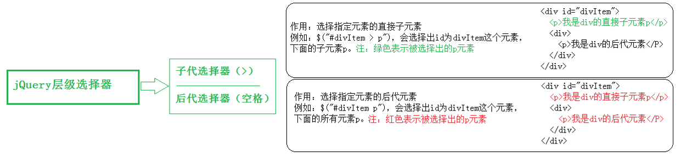
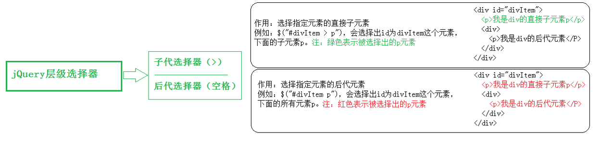

51-jQuery的介绍和选择器
jQuery 是 js 的一个库，封装了我们开发过程中常用的一些功能，方便我们调用，提高开发效率。
学习初期，主要学习如何使用jQuery操作DOM，其实就是学习jQuery封装好的那些API。
使用 jQuery 的基本步骤
- （1）引包
- （2）入口函数
- （3）功能实现代码（事件处理）
入口函数
原生 js 的入口函数指的是：window.onload = function() {};页面上所有内容加载完毕，才执行。
jQuery的入口函数，有以下几种写法：
- 1.文档加载完毕，图片不加载的时候可以执行此函数:$(document).ready(function () {}) 也可以缩写为:$(function () {})
- 2.档加载完毕，图片也加载完毕的时候，可以执行此函数:$(window).ready(function(){})
jQuery入口函数与js入口函数的区别：
- 区别一：书写个数不同。Js 的入口函数只能出现一次，出现多次会存在事件覆盖的问题。jQuery 的入口函数，可以出现任意多次，并不存在事件覆盖问题。
- 区别二：执行时机不同。Js的入口函数是在所有的文件资源加载完成后，才执行。这些文件资源包括：页面文档、外部的js文件、外部的css文件、图片等。
jQuery的入口函数，是在文档加载完成后，就执行。文档加载完成指的是：DOM树加载完成后，就可以操作DOM了，不用等到所有的外部资源都加载完成。
jQuery的$符号
console.log($===jQuery);的结果为true,说明$ 代表的就是 jQuery。$ 实际上表示的是一个函数名 如下：
如上方所示，jQuery 里面的 $ 函数，根据传入参数的不同，进行不同的调用，实现不同的功能。返回的是jQuery对象。
jQuery这个js库，除了 $ 之外，还提供了另外一个函数：jQuery。jQuery函数跟 $ 函数的关系：jQuery === $。
js中的DOM对象 和 jQuery对象 比较（重点，难点）
二者的区别如下：通过 jQuery 获取的元素是一个数组，数组中包含着原生JS中的DOM对象。总结：jQuery 就是把 DOM 对象重新包装了一下，让其具有了 jQuery 方法。
二者的相互转换
- 1、 DOM 对象 转为 jQuery对象：$(js对象);
- jQuery对象 转为 DOM 对象：jquery对象[index];
jQuery 选择器
52-jQuery动画详解
jQuery提供的一组网页中常见的动画效果，这些动画是标准的、有规律的效果；同时还提供给我们了自定义动画的功能。
显示动画
- 方式一：$("div").show();
- 方式二：$("div").show(2000);
- 方式三：$("div").show("slow");
- 方式四： $("div").show(5000,function () {});
隐藏动画hide()的方式参照上面的show()方法的方式。显示和隐藏的来回切换采用的是toggle()方法：就是先执行show()，再执行hide()。格式:$(selector).toggle();
显示和隐藏的来回切换：$(selector).toggle();
滑入和滑出
- 滑入动画效果：$(selector).slideDown(speed, 回调函数);解释：下拉动画，显示元素。
- 滑出动画效果：$(selector).slideUp(speed, 回调函数);解释：上拉动画，隐藏元素
- 滑入滑出切换动画效果：$(selector).slideToggle(speed, 回调函数);参数解释同show()方法。
自定义动画
格式:$(selector).animate({params}, speed, callback);作用：执行一组CSS属性的自定义动画。
第一个参数表示：要执行动画的CSS属性（必选）
第二个参数表示：执行动画时长（可选）
第三个参数表示：动画执行完后，立即执行的回调函数（可选）
停止动画
- 格式:$(selector).stop(true, false);PS：参数如果都不写，默认两个都是false。实际工作中，直接写stop()用的多。
第一个参数：
- true：后续动画不执行。
- false：后续动画会执行。
第二个参数：
- true：立即执行完成当前动画。
- false：立即停止当前动画。
当调用stop()方法后，队列里面的下一个动画将会立即开始。 但是，如果参数clearQueue被设置为true，那么队列面剩余的动画就被删除了，并且永远也不会执行。
如果参数jumpToEnd被设置为true，那么当前动画会停止，但是参与动画的每一个CSS属性将被立即设置为它们的目标值。比如：slideUp()方法，那么元素会立即隐藏掉。如果存在回调函数，那么回调函数也会立即执行。
注意：如果元素动画还没有执行完，此时调用stop()方法，那么动画将会停止。并且动画没有执行完成，那么回调函数也不会被执行。
53-jQuery操作DOM
样式操作和类操作
作用:作用：设置或获取元素的样式属性值。
样式操作
- 1、设置样式
- 2、获取样式：
类操作（className）
- 1、添加类样式：注意：此处类名不带点，所有类操作的方法类名都不带点。
- 2、移除类样式：
- 3、判断有没有类样式：
- 4、切换类样式：
样式操作和类操作的比较
- 操作的样式非常少，那么可以通过.css()实现。
- 操作的样式很多，建议通过使用类 class 的方式来操作。
- 如果考虑以后维护方便（把CSS从js中分离出来）的话，推荐使用类的方式来操作。
jQuery 的节点操作
原生 js 有三种动态创建元素的方式。这里我们学一下 jQuery 动态创建元素。注意，创建的是 jQuery 对象。
动态创建元素
- 方式一：var $spanNode1 = $("<span>我是一个span元素</span>"); // 返回的是 jQuery对象,此方法类似于 原生 js
中的document.createElement("标签名");
- 方式二(推荐):var node = $("#box").html("<li>我是li</li>");//此方法类似于 原生 js 中的innerHTML。
jQuery 添加元素的方法非常多，最重要的方法是append()。格式如下：
添加元素
- 方式一:$(selector).append($node); //参数是 jQuery对象
- 方式二：$(selector).append('<div></div>'); //参数是 htmlString
作用：在被选元素内部的最后一个子元素（或内容）后面插入内容（存在或者创建出来的元素都可以）。如果是页面中存在的元素，那调用append()后，会把这个元素放到相应的目标元素里面去；但是，原来的这个元素，就不存在了。
如果是给多个目标追加元素，那么方法的内部会复制多份这个元素，然后追加到多个目标里面去
- 方式三:$(selector).appendTo(node);作用：同append()，只不过是反着写的。
- 方式四:$(selector).prepend(node);作用：在元素的第一个子元素前面追加内容或节点。
- 方式五:$(selector).after(node);作用：在被选元素之后，作为兄弟元素插入内容或节点。
- 方式六:$(selector).before(node);作用：在被选元素之前，作为兄弟元素插入内容或节点。
清空元素
- $(selector).empty()或者$(selector).html("");解释：清空指定元素的所有子元素（光杆司令）。
- $(selector).remove();解释：“自杀” 。把自己以及所有的内部元素从文档中删除掉。
复制元素
- 复制的新元素 = $(selector).clone();解释：复制$(selector)这个元素。是深层复制
推荐使用 html("") 方法来创建元素或者 html("") 清空元素。
jQuery 设置和获取属性
jQuery 无法直接操作节点的属性和src等，我们需要借助attr()方法。
属性操作
- 设置属性：$(selector).attr("title", "生命壹号");
- 获取属性：$(selector).attr("title");
- 移除属性：$(selector).removeAttr("title");
- form表单中的 prop()方法：针对checked、selected、disabled属性，要使用 prop()方法，而不是其他的方法。
prop方法通常用来影响DOM元素的动态状态，而不是改变的HTML属性。例如：input和button的disabled特性，以及checkbox的checked特性。
- val()方法:$(selector).val();作用：设置或返回 form 表单元素的value值，例如：input、select、textarea 的值。
- text()方法:$(selector).text();作用：设置或获取匹配元素的文本内容。获取双闭合标签中的文本值。（不识别标签）(类比js中的innerText)。不带参数表示，会把所有匹配到的元素内容拼接为一个字符串，不同于其他获取操作。
- text()方法:$(selector).html("我是内容");作用：设置的内容包含html标签，获取双闭合标签中的文本值。（识别标签）(类比js中的innerHTML)。那么text()方法会把他们当作纯文本内容输出。
54-jQuery的事件机制和其他知识
jQuery 设置宽度和高度
jQuery 的坐标操作
position()方法作用：获取相对于其最近的带有定位的父元素的位置。返回值为对象：{left:num, top:num}。注意：只能获取，不能设置。
scrollTop()方法作用：获取或者设置元素被卷去的头部的距离。参数解释：无参数：表示获取偏移。有参数：表示设置偏移，参数为数值类型。
scrollLeft()方法作用：获取或者设置元素水平方向滚动的位置。参数解释：无参数：表示获取偏移。有参数：表示设置偏移，参数为数值类型。
jQuery的事件机制
常见的事件绑定
- click(handler) 单击事件。
- blur(handler) 失去焦点事件。
- mouseenter(handler) 鼠标进入事件
- mouseleave(handler) 鼠标离开事件。
- dbclick(handler) 双击事件。
- change(handler) 改变事件，如：文本框值改变，下拉列表值改变等。
- focus(handler) 获得焦点事件。
- keydown(handler) 键盘按下事件。
on方式绑定事件
最早采用的是 bind、delegate等方式绑定的。jQuery 1.7版本后，jQuery用on统一了所有的事件处理的方法，此方法兼容zepto(移动端类似于jQuery的一个库)。
- 第一个参数：events，绑定事件的名称可以是由空格分隔的多个事件（标准事件或者自定义事件）。上方代码绑定的是单击事件和鼠标进入事件。
- 第二个参数：selector, 执行事件的后代元素。
- 第三个参数：data，传递给事件处理函数的数据，事件触发的时候通过event.data来使用（也就是说，可以通过event拿到data）
- 第四个参数：handler，事件处理函数。
off方式解绑事件
jQuery的事件对象
- event.data 传递给事件处理程序的额外数据
- event.currentTarget 等同于this，当前DOM对象
- event.pageX 鼠标相对于文档左部边缘的位置
- event.target 触发事件源，不一定===this
- event.stopPropagation()； 阻止事件冒泡
- event.preventDefault(); 阻止默认行为
- event.type 事件类型：click，dbclick…
- event.which 鼠标的按键类型：左1 中2 右3
- event.keyCode 键盘按键代码
jQuery 的两大特点
（1）链式编程：比如.show()和.html()可以连写成.show().html()。链式编程原理：return this。通常情况下，
只有设置操作才能把链式编程延续下去。因为获取操作的时候，会返回获取到的相应的值，无法返回 this。
end(); // 结束当前链最近的一次过滤操作，并且返回匹配元素之前的状态。
2）隐式迭代：隐式 对应的是 显式。隐式迭代的意思是：在方法的内部会为匹配到的所有元素进行循环遍历，执行相应的方法；
而不用我们再进行循环，简化我们的操作，方便我们调用。
如果获取的是多元素的值，大部分情况下返回的是第一个元素的值。
多库共存
多库共存指的是：jQuery占用了 $ 和 jQuery 这两个变量。当在同一个页面中引用了 jQuery 库以及其他的库（或者其他版本的jQuery库），
恰好其他的库中也用到了 $ 或者jQuery变量.那么，要保证每个库都能正常使用，就产生了多库共存的问题。我们可以通过以下方式获取 jQuery 库的版本号：
console.log($.fn.jquery); //打印 jQuery 库的版本号
办法一：让 jQuery 放弃对 $ 的使用权：$.noConflict();但是1.11.1版本并没有放弃对 jQuery关键字的使用权。
办法二：同时放弃放弃两个符号的使用权，并定义一个新的使用权（如果有三个库时，可以这样用）:$.noConflict(true); //返回值是新的关键字
jQuery 的插件机制
jQuery 库，虽然功能强大，但也不是面面俱到。jQuery 是通过插件的方式，来扩展它的功能：
当你需要某个插件的时候，你可以“安装”到jQuery上面，然后使用。
当你不再需要这个插件，那你就可以从jQuery上“卸载”它。
举例:jQuery的自定义动画方法animate()，在执行动画时，是不支持设置背景色这个属性的。这个时候可以借助jQuery.color.js这个插件。
插件之懒加载
懒加载：当打开一个网页时，只有当我看到某个部分，再加载那个部分；而不是一下子全部加载完毕。这样可以优化打开的速度。
比如说，我可以设置一张图片为懒加载，于是，这张图片会等我宠幸到它的时候，它再打开。
55-Zepto入门
zepto是轻量级的JavaScript库，专门为移动端定制的框架。
与jquery有着类似的API，俗称：会jquery就会用zepto
zepto的特点
- 针对移动端
- 轻量级，压缩版本只有8kb左右
- 响应，执行快
- 语法、API大部分同jquery一样，学习难度低，上手快。
- 目前API完善的框架中体积最小的一个
 
